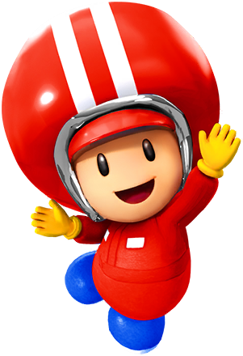
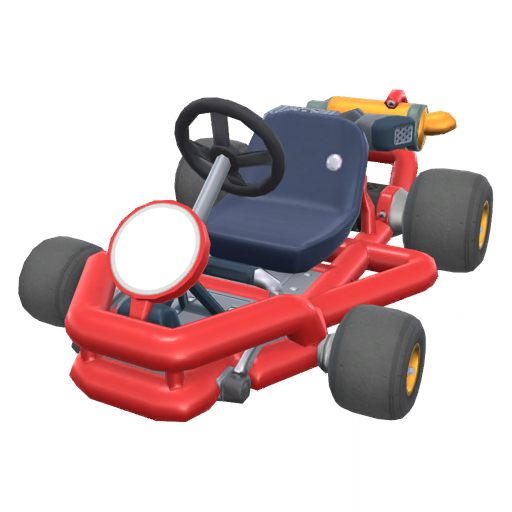
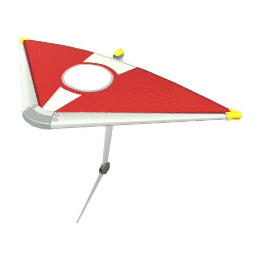

Getting Cool Stuff
The unlockable items in Mario Kart Tour fall into one of three categories:
Characters
Karts
Gliders
You’ll start out with the majority of these items locked. There are many ways to unlock these items, such as:
- Finding them in Tour Gifts
- Firing items out of Tour Pipes
- Placing well in Ranked Competitions
- Completing Challenges
- Purchasing them in the various shops with coins, rubies or tokens
- Purchasing them with real money as microtransactions
Rarity
Keep in mind that an item’s rarity affects how hard it is to obtain that item. For instance, High-end Drivers are harder to get than a Super Driver. A Super Driver is harder to get than a Normal Driver. Rarity also affects other things as well:
- Rarer items are less common to be shot from pipes
- Rarer items are among the highest rewards for placing well in tiers
- Rarer items are more expensive in shops
- Rarer items have a higher Base Stat Total
- Rarer items generally have a higher amount of Favorite Courses.
Coins Tokens and Rubies
Coins, Tokens and Rubies are the main forms of currency in Mario Kart Tour. Each currency has a different use:
- Coins are collected from races as you pick them off the road, collect them as items, or gain every 1,000 points from a race. They can be used to buy things in the Daily Selects shop or the Tier Shop. You can also get a bunch of coins in Coin Rush
- Tokens are collected from races. It varies from tour to tour how to collect them, but generally tokens are collected from finding them in races, or by making opponents crash. Tour Tokens can only be redeemed in the Token Shop. Unlike other currencies, Tour Tokens are not carried over from Tour to Tour and will reset once a Tour finishes.
- Rubies are collected from Tour Gifts, completed Challenges, and the Token Shop. You can use them to purchase items in the Spotlight Shop and Mii Racing Suit Shop. Rubies are the rarest of the currencies and the hardest to collect. You can also use rubies to activate Coin Rush, but… why would you do that?